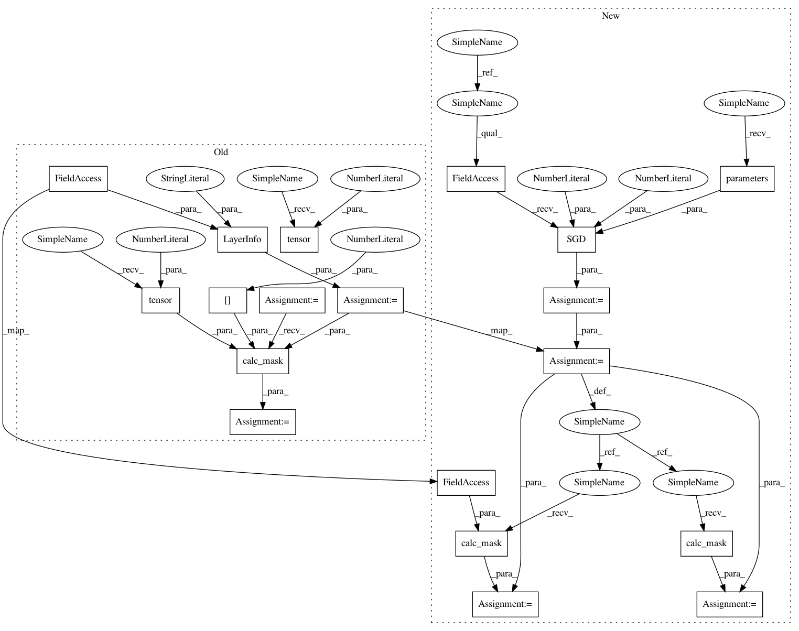

ede593804169a727e65b6723ec8a075afdf4c8c2,src/sdk/pynni/tests/test_compressor.py,CompressorTestCase,test_torch_slim_pruner,#CompressorTestCase#,194
Before Change
layer1 = torch_compressor.compressor.LayerInfo("bn1", model.bn1)
mask1 = pruner.calc_mask(layer1, config_list[0], if_calculated=torch.tensor(0))
layer2 = torch_compressor.compressor.LayerInfo("bn2", model.bn2)
mask2 = pruner.calc_mask(layer2, config_list[0], if_calculated=torch.tensor(0))
assert all(mask1["weight"].numpy() == np.array([0., 1., 1., 1., 1.]))
assert all(mask2["weight"].numpy() == np.array([0., 1., 1., 1., 1.]))
assert all(mask1["bias"].numpy() == np.array([0., 1., 1., 1., 1.]))
assert all(mask2["bias"].numpy() == np.array([0., 1., 1., 1., 1.]))
config_list = [{"sparsity": 0.6, "op_types": ["BatchNorm2d"]}]
model.bn1.weight.data = torch.tensor(w).float()
model.bn2.weight.data = torch.tensor(w).float()
pruner = torch_compressor.SlimPruner(model, config_list)
layer1 = torch_compressor.compressor.LayerInfo("bn1", model.bn1)
mask1 = pruner.calc_mask(layer1, config_list[0], if_calculated=torch.tensor(0))
layer2 = torch_compressor.compressor.LayerInfo("bn2", model.bn2)
mask2 = pruner.calc_mask(layer2, config_list[0], if_calculated=torch.tensor(0))
assert all(mask1["weight"].numpy() == np.array([0., 0., 0., 1., 1.]))
assert all(mask2["weight"].numpy() == np.array([0., 0., 0., 1., 1.]))
assert all(mask1["bias"].numpy() == np.array([0., 0., 0., 1., 1.]))
assert all(mask2["bias"].numpy() == np.array([0., 0., 0., 1., 1.]))
After Change
assert all(mask2["bias_mask"].numpy() == np.array([0., 1., 1., 1., 1.]))
model = TorchModel()
optimizer = torch.optim.SGD(model.parameters(), lr=0.01, momentum=0.5)
config_list = [{"sparsity": 0.6, "op_types": ["BatchNorm2d"]}]
model.bn1.weight.data = torch.tensor(w).float()
model.bn2.weight.data = torch.tensor(w).float()
pruner = torch_compressor.SlimPruner(model, config_list, optimizer)
mask1 = pruner.calc_mask(model.bn1)
mask2 = pruner.calc_mask(model.bn2)
assert all(mask1["weight_mask"].numpy() == np.array([0., 0., 0., 1., 1.]))
assert all(mask2["weight_mask"].numpy() == np.array([0., 0., 0., 1., 1.]))
assert all(mask1["bias_mask"].numpy() == np.array([0., 0., 0., 1., 1.]))
assert all(mask2["bias_mask"].numpy() == np.array([0., 0., 0., 1., 1.]))
In pattern: SUPERPATTERN
Frequency: 3
Non-data size: 19
Instances
Project Name: Microsoft/nni
Commit Name: ede593804169a727e65b6723ec8a075afdf4c8c2
Time: 2020-03-02
Author: 656569648@qq.com
File Name: src/sdk/pynni/tests/test_compressor.py
Class Name: CompressorTestCase
Method Name: test_torch_slim_pruner
Project Name: Microsoft/nni
Commit Name: ede593804169a727e65b6723ec8a075afdf4c8c2
Time: 2020-03-02
Author: 656569648@qq.com
File Name: src/sdk/pynni/tests/test_compressor.py
Class Name: CompressorTestCase
Method Name: test_torch_slim_pruner
Project Name: Microsoft/nni
Commit Name: ede593804169a727e65b6723ec8a075afdf4c8c2
Time: 2020-03-02
Author: 656569648@qq.com
File Name: src/sdk/pynni/tests/test_compressor.py
Class Name: CompressorTestCase
Method Name: test_torch_l1filter_pruner
Project Name: Microsoft/nni
Commit Name: ede593804169a727e65b6723ec8a075afdf4c8c2
Time: 2020-03-02
Author: 656569648@qq.com
File Name: src/sdk/pynni/tests/test_compressor.py
Class Name: CompressorTestCase
Method Name: test_torch_fpgm_pruner